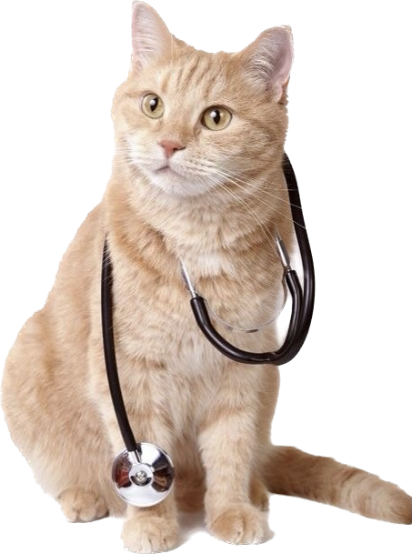

Nơi mang lại tình yêu và sức khỏe cho thú cưng của bạn
DỊCH VỤ TIÊM NGỪA THÚ CƯNG
Uy Tín -- Chất Lượng - Nhiệt Huyết
TẦM QUAN TRỌNG CỦA VIỆC TIÊM NGỪA
Tiêm vacxin là cách tốt nhất dể giúp chú thú cưng
của bạn phòng chống được bệnh nguy hiểm, bệnh không
có thuốc chữa, bệnh truyền nhiễm.Từ đó tránh được
thiệt hại về kinh tế cho bạn cũng như tính mạng
của thú cưng.
Chó cũng có thể mắc nhiều bệnh nguy hiểm giống như con người.
Do vậy, nếu không được lên lịch tiêm phòng cho chó sẽ khiến
cún dễ chết nếu không may bị nhiễm bệnh.

CÁC LOẠI VACCINE TẠI PETCARE
5 BỆNH (cún)
Vacxin giúp thú cưng chống lại 5
căn bệnh cùng lúc,
giúp bạn tiết kiệm tiền bạc và giảm thiểu
sự đau đớn của thú cưng.
Thú cưng của bạn sẽ được bảo vệ tối đa mà không
cần phải tiêm quá nhiều.
Vacxin 5 bệnh bao gồm:
1. Care virus
2. Parvo virus
3. Viêm gan truyền nhiễm
4. Ho cũi chó
5. Phổi cúm.
Giá: 160K
4 BỆNH (mèo)
Vắc xin phòng 4 bệnh cho mèo giúp mèo phòng ngừa
những bệnh nguy hiểm gây tử
vong hàng đầu ở mèo. Bệnh
có tốc độ lây lan nhanh chóng thông qua việc tiếp xúc với dịch tiết mèo bệnh.
Vaccine 4 bệnh ở mèo bao gồm:
1. Bệnh Giảm bạch cầu ở mèo.
2. Bệnh viêm mũi ở mèo.
3. Bệnh nhiễm trùng calicivirus.
4. Bệnh dại cho mèo.
Giá: 245K
7 BỆNH (cún)
Tiêm vacxin 7 bệnh
giúp hệ miễn dịch của
cơ thể kháng nguyên với những bệnh truyền nhiễm, tăng sức đề kháng.
Giảm sự tấn công của các tác nhân gây ra bệnh một cách hiệu quả.
Vacxin 7 bệnh bao gồm:
1. Bệnh viêm ruột cannine Parvovirus
2. Viêm gan Cannine Adenovirus
3. Cúm Cannine Parainfluenza
4. Nghệ leptospira Canicola
5. Nghệ leptospira Icterohaemorr
6. Viêm ruột do coronavirus
7. Cannine Distemper Virus
Giá: 175K
FIP (mèo)
Đây là một trong các loại vaccine nhất thiết phải tiêm cho mèo.
Mèo được tiêm chủng FIP qua đường mũi sẽ phát triển phản
ứng miễn dịch bảo vệ và không trở nên quá mẫn cảm.
Vacxin FIP bao gồm:
Feline Infectious Peritonitis (FIP)-
còn gọi là bệnh viêm phúc mạc ở mèo. Đây là một bệnh
gây ra do sự đột biến từ những virus corona lành tính ở mèo.
Giá: 315K
NHỮNG CÂU HỎI THƯỜNG GẶP
Chính sách bảo vệ sức khỏe thú cưng
Chính sách bảo vệ sức khỏe thú cưng là một trong những ưu tiên hàng đầu của chúng tôi tại cửa hàng chăm sóc thú cưng.
Chúng tôi xác định rằng để đảm bảo sức khỏe và sự an toàn cho thú cưng, các chủ nuôi cần phải thực hiện đầy đủ các biện pháp vệ sinh và tiêm ngừa định kỳ cho thú cưng của mình.
Vì vậy, chúng tôi khuyến khích và yêu cầu tất cả các khách hàng khi sử dụng các dịch vụ chăm sóc thú cưng của chúng tôi, bao gồm cả lưu trú, phải đảm bảo thú cưng đã được tiêm ngừa mới nhất và đáp ứng các tiêu chuẩn vệ sinh cần thiết.
Điều này không chỉ đảm bảo sức khỏe cho thú cưng của bạn, mà còn đảm bảo sức khỏe cho tất cả các thú cưng khác trong khu vực.
Chúng tôi cam kết tuân thủ nghiêm ngặt các quy định và tiêu chuẩn vệ sinh cần thiết để đảm bảo môi trường sống sạch sẽ, an toàn và thoải mái cho thú cưng của bạn.
Nhân viên và trang thiết bị
PET CARE luôn đặt chất lượng dịch vụ lên hàng đầu để đáp ứng được yêu cầu khách hàng ngày càng cao.
Nhân viên được tuyển chọn kỹ càng và đào tạo bài bản, đảm bảo có đầy đủ kỹ năng và tinh thần trách nhiệm để phục vụ khách hàng tốt nhất.
Chúng tôi cũng thường xuyên cập nhật kiến thức và kỹ năng mới cho nhân viên để đáp ứng được nhu cầu khách hàng ngày càng đa dạng.
Về trang thiết bị, PET CARE đầu tư mạnh vào các thiết bị hiện đại và đầy đủ chức năng để hỗ trợ các dịch vụ của chúng tôi.
Chúng tôi đảm bảo mọi trang thiết bị được kiểm tra kỹ lưỡng trước khi sử dụng để đảm bảo an toàn và hiệu quả trong việc phục vụ khách hàng.
Cửa hàng PET CARE ở đâu?
PETCARE, 168 Nam Kỳ Khởi Nghĩa, Quận 1, TP. Hồ Chí Minh.
Tiêm ngừa có an toàn không và có tác dụng phụ không?
Tiêm ngừa là một phương pháp phòng bệnh phổ biến và hiệu quả trong y học thú y. Tuy nhiên, như bất kỳ thủ thuật y tế nào, tiêm ngừa cũng có thể gây ra tác dụng phụ nhất định.
Tuy nhiên, tác dụng phụ của tiêm ngừa là rất hiếm và thường là nhẹ và ngắn hạn, chẳng hạn như đau ở chỗ tiêm, sưng hoặc đỏ, sốt nhẹ, mệt mỏi và đau đầu. Các tác dụng phụ này thường không nghiêm trọng và sẽ tự giảm đi sau vài ngày.
Về tổng thể, việc tiêm ngừa là một phương pháp phòng ngừa bệnh tốt và an toàn, và các tác dụng phụ là hiếm và thường không gây nguy hiểm đến sức khỏe của thú cưng.
Tiêm ngừa cần thực hiện bao nhiêu lần và tần suất như thế nào để đảm bảo hiệu quả?
Số lần và tần suất tiêm ngừa phụ thuộc vào loại vaccine và hướng dẫn của nhà sản xuất. Tuy nhiên, đa số các loại vaccine đều yêu cầu tiêm ít nhất 2 lần để đạt được hiệu quả cao nhất. Sau đó, tần suất tiêm phụ thuộc vào từng loại vaccine cụ thể. Thông thường, vaccine sẽ có hướng dẫn về tần suất tiêm để đảm bảo hiệu quả phòng ngừa và bảo vệ thú cưng. Để đảm bảo an toàn và hiệu quả, nên tham khảo ý kiến của bác sĩ thú y để lên kế hoạch tiêm ngừa cho thú cưng.
Tiêm ngừa có phải là cách duy nhất để ngăn ngừa bệnh cho thú cưng không?
Không, tiêm ngừa không phải là cách duy nhất để ngăn ngừa bệnh cho thú cưng. Để đảm bảo sức khỏe cho thú cưng, việc tiêm ngừa chỉ là một trong những biện pháp phòng bệnh. Ngoài ra, việc giữ vệ sinh, cung cấp dinh dưỡng và chăm sóc đúng cách cũng rất quan trọng để bảo vệ sức khỏe cho thú cưng.
PET
CUNG CẤP CÁC DỊCH VỤ THÚ CƯNG
ĐƯỢC YÊU THÍCH NHẤT VIỆT NAM
CARE
Dịch vụ SPA thú cưng tại PETCARE vinh hạnh được các bạn trẻ bình chọn
là thương hiệu được yêu thích nhất năm 2022!